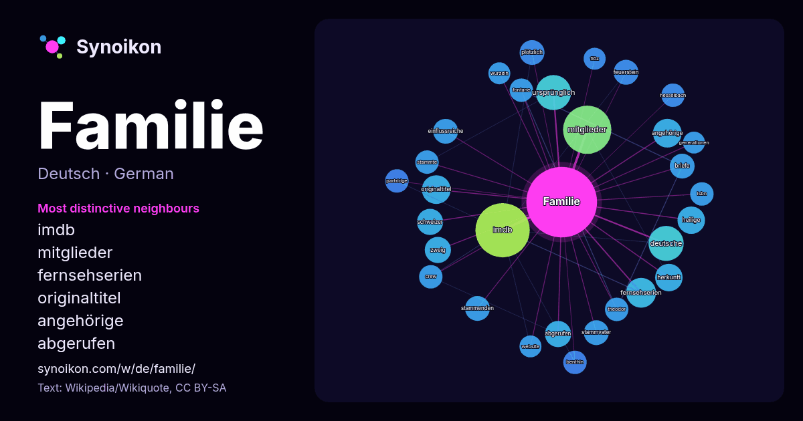

Deutsch · beliebtes Wort
Familie
“family” · Die Wörter in seinem Umfeld aus 1080 Vorkommen in Wikipedia, Wikiquote.

Typischste Nachbarn
- imdb 44×
- mitglieder 22×
- fernsehserien 13×
- originaltitel 12×
- angehörige 12×
- abgerufen 11×
- ursprünglich 11×
- heilige 11×
- zweig 10×
- feuerstein 9.9×
- stammvater 9.8×
- einflussreiche 9.8×
- briefe 9.4×
- stammenden 9.3×
- plötzlich 9.2×
- herkunft 9.1×
- partridge 9.0×
- hesselbach 9.0×
- benthin 9.0×
- fontane 8.9×
× = wie viel häufiger als in allgemeinem Wikipedia-Text.
Häufigste Nachbarn
- imdb 43
- mitglieder 34
- jahrhundert 27
- deutsche 18
- ursprünglich 18
- geschichte 14
- deutschland 13
- fernsehserien 13
- gehört 13
- angehörige 12
- originaltitel 12
- heilige 11
- herkunft 11
- mehrere 11
- abgerufen 10
- friedrich 10
- gruppe 10
- namen 10
- schweizer 10
- stammt 10
Im Kontext
- Familie beruht im Wesentlichen auf Verwandtschaftsbeziehungen. Zu klären ist nicht nur die Frage, ob eine bestimmte soziale Kleingruppe eine Familie bildet Wikipedia snippets · Familie
- Die Familien-Partei Deutschlands (Kurzbezeichnung: Familie, Eigenschreibweise: FAMILIE) ist eine Kleinpartei in Deutschland, die sich schwerpunktmäßig Wikipedia snippets · Familien-Partei Deutschlands
- (in der Lepidopterologie) Familie Unterfamilie Infrafamilie Üblicherweise finden nur die Überfamilie, Epifamilie, Familie und Unterfamilie Verwendung Wikipedia snippets · Familie (Biologie)
- die Rolle der Familie Quandt während der Zeit des Nationalsozialismus. Nach Ausstrahlung der Dokumentation erklärten Sprecher der Familie im Oktober 2007 Wikipedia snippets · Quandt (Familie)
- Familie (von lateinisch familia „Gesamtheit der Dienerschaft“) steht für: Familie, eine Gruppe miteinander lebender Menschen Familie, eine Gruppe miteinander Wikipedia snippets · Familie (Begriffsklärung)
- Die Familie Mann ist eine deutsche Literaten-Familie, die von dem Lübecker Senator Thomas Johann Heinrich Mann abstammt, dem Oberhaupt einer alten hanseatischen Wikipedia snippets · Mann (Familie)
- familiäre Verwerfungen. MobLand – Familie bis aufs Blut bei IMDb Offizielle Seite bei Paramount+ MobLand – Familie bis aufs Blut Serienjunkies.de, abgerufen Wikipedia snippets · MobLand – Familie bis aufs Blut
- “ – Critic.de Meine keine Familie bei IMDb Meine keine Familie bei Freibeuter Film. Website des Films Meine keine Familie Archiv Sammlung Friedrichshof Wikipedia snippets · Meine keine Familie
Weitere Wörter
- Arbeit
- Brücke
- Essen
- Geld
- Geschichte
- Gesundheit
- Gold
- Gott
- Kunst
- Leben
- Macht
- Natur
- Tod
- Wahrheit
- Wasser
- Wissenschaft
- Zug
Vorberechnet am 2026-10-09 mit Standardeinstellungen (±5 Wörter, mittlerer Korpus). Die interaktive Karte kann mit Live-Daten aktualisieren.
Maschinell übersetzte Oberfläche; Korrekturen willkommen.